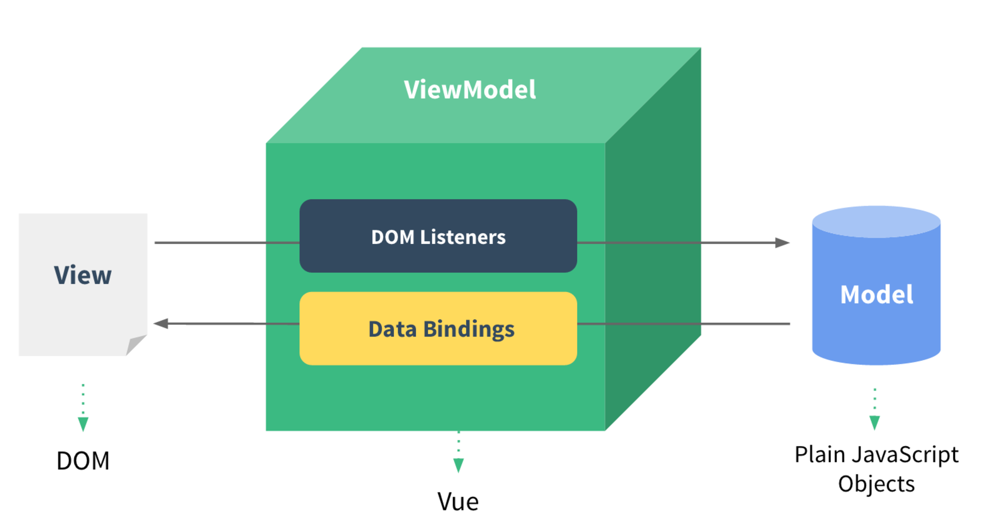
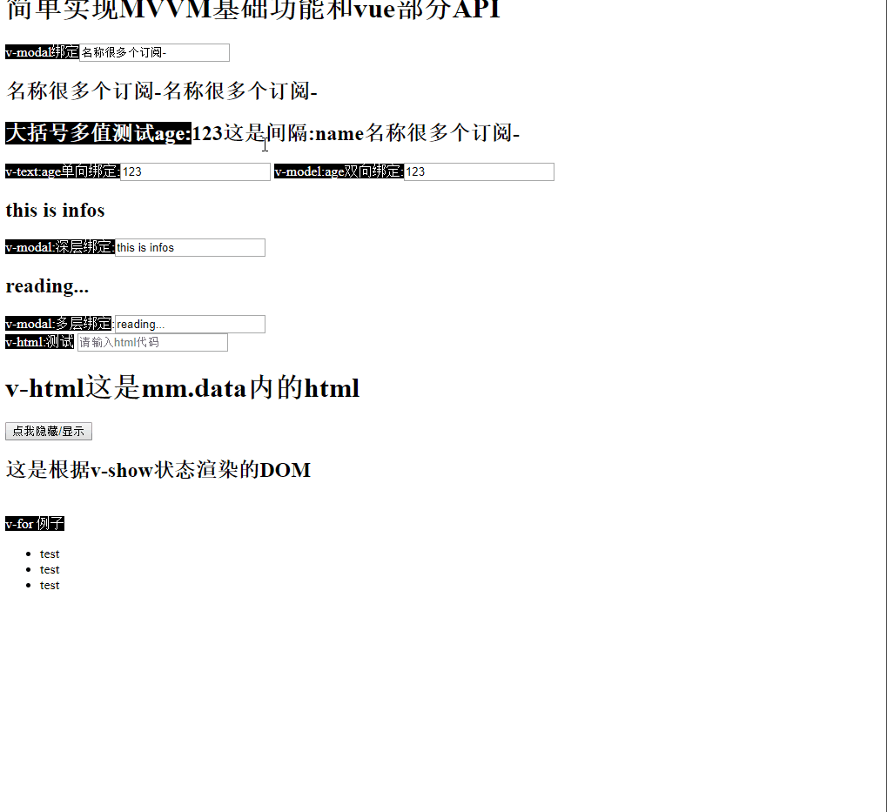

实现mini MVVM
借由官网的图来解释MVVM如何实现数据层和DOM层进行数据绑定，视图层和数据层绑定，当数据层数据改变时，自动触发视图层渲染数据，让开发者更专注于业务，而不是频繁的DOM操作。在读懂本文前，你需要了解发布订阅模式，原生JS相关DOM操作API，ES6常用语法，闭包的理解等。

初始化MVVM对象编译模板，解析指令，根据指令进行不同的处理，在解析指令时遇到指令或{{}}符号时说明该Dom是要动态渲染的，故实例化一个监听者（Watcher），先渲染初始化参数，传入指令对应的需要数据绑定的参数(v-modal = "data.a")，此时传入data.a和一个callBack函数，callBack函数一般用来存储更新对应视图的代码，这样Watcher就能通过数据拿到最新的值去重新局部更新视图，说到这里，那么如何在数据发生改变的时候去通知监听者触发callBack函数进行试图重新更新呢，vue使用defineProperty对数据进行劫持，重写对象的get,set函数，达到每次改变数据时触发监听者渲染最新的数据。

文件结构
- MVVM.js 获取初始化参数数据并分发到对应功能类处理对应的参数
- Compile.js 编译模板，解析指令，渲染初始化参数
- Observe.js 数据劫持：基于defineProperty对参数内的data进行深度劫持，为每一个对象都设置一个get和set方法
- Watch.js 监听:获取函数最新的值并局部更新Dom。依赖收集：为每个数据存入与该数据有依赖关系需要更新的DOM的函数，数据改变时利用发布订阅模式触发其更新视图层。
效果图

index.html
<!DOCTYPE html>
<html lang="en">
<head>
<meta charset="UTF-8">
<meta name="viewport" content="width=device-width, initial-scale=1.0">
<meta http-equiv="X-UA-Compatible" content="ie=edge">
<title>Document</title>
<script src="./Observe.js"></script>
<script src="./Watch.js"></script>
<script src="Compile.js"></script>
<script src="./MVVM.js"></script>
</head>
<body>
<style>
.title {
color: white;
background: black;
}
</style>
<h1>简单实现MVVM基础功能和vue部分API</h1>
<div id='app'>
<span class="title">v-modal绑定</span><input v-model="name" placeholder="请输入" />
<h2><span>{{name}}</span><span>{{name}}</span></h2>
<h2><span class="title">大括号多值测试age:</span>{{age}}<span>这是间隔:name</span>{{name}}</h2>
<span class="title">v-text:age单向绑定:</span><input v-text="age" id='test' />
<span class="title">v-model:age双向绑定:</span><input v-model="age" id='test' />
<h2>{{message.info}}</h2>
<span class="title">v-modal:深层绑定:</span><input v-model="message.info" id='test' />
<h2>{{message.like.reading}}</h2>
<span class="title">v-modal:多层绑定</span>:<input v-model="message.like.reading" id='test' />
<br />
<span class="title">v-html:测试</span>
<input type="text" oninput="mm.methods.changeHtml(event)" placeholder="请输入html代码" />
<div v-html="message.html"></div>
<input type="button" onclick="mm.methods.tabStatus()" value="点我隐藏/显示" />
<h2 v-show="isShow">这是根据v-show状态渲染的DOM</h2>
<br />
<span class="title">v-for 例子</span>
<ul>
<li v-for="item in message.arrs">test</li>
</ul>
</div>
<script>
var mm = new MVVM({
el: '#app',
data: {
name: '名称很多个订阅-',
age: '123',
isShow: true,
message: {
html: '<h1>v-html这是mm.data内的html</h1>',
info: 'this is infos',
arrs: [{
name: 'cj',
age: 24
}, {
name: 'cj2',
age: 24
}],
like: {
reading: 'reading...',
playing: 'playing...'
}
}
},
methods: {
initParams() {
},
tabStatus() {
mm.data.isShow = !mm.data.isShow;
},
changeHtml(event) {
mm.data.message.html = event.target.value
}
},
mounted() {
}
})
</script>
</body>
</html>
MVVM.js
接收参数，判断参数是否符合要求,分发参数到各个功能类处理。
class MVVM{
constructor(options){
typeof options.el==='string'?this.el=document.querySelector(options.el):this.el=options.el;
this.data=options.data;
this.methods=options.methods;
typeof this.data==='object'?new Observe(this):new Error('the data is not a object');//数据劫持
this.el.nodeType===1?new Compile(this.el,this):new Error('The Element is not find');//编译模板
}
}
Compile.js
编译传入的对应"#app"元素内的节点，初始化data内的参数。
class Compile {
constructor(el, vm) {
this.el = el;
this.vm = vm;
let fragment = this.nodeToFragment(this.el);//将节点移入内存高效快速处理
//避免编译Dom时浏览器触发重绘重排等操作。
this.compile(fragment);//开始编译模板
this.el.appendChild(fragment);//编译后的模板加入到父节点中
fragment=null;//回收内存
}
nodeToFragment(el) {//移入所有节点到内存中
let fragment = document.createDocumentFragment();
let firstChild;
while (firstChild = el.firstChild) {
fragment.appendChild(firstChild);
}
return fragment;
}
compile(fragment) {
let childNodes = fragment.childNodes;
Array.from(childNodes).forEach(element => {
if (element.nodeType === 1) { //节点
this.compileNode(element);//编译节点
this.compile(element);//是节点再次遍历其子节点
} else {
this.compileText(element); //文本
}
});
}
compileNode(node) {
let attrs = node.attributes;//得到dom的节点参数
Array.from(attrs).forEach((item) => {//遍历节点，判断是否是指令
if (item.name.includes('v-')) {
let directName, directValue;
directName = item.name.split('-')[1];//去除对应的指令参数，是modal还是text，html等
directValue = item.nodeValue;//取出指令的值
if (directName === 'for') {//v-for参数取值要求in后面的参数 (item,index) in data
directValue.includes('in') ? directValue = directValue.split('in')[1].trim() : undefined;
}
new Watch(this, directValue, (curVal, oldVal) => {//实例化一个监听者，传入指令的值，此时可以根据指令的值获取得到老值，callBack函数传递新值和老值
this.Util[directName].call(this, node, directValue);//回调函数需要执行的代码，故数据更新时需要执行的代码。
//调用Util对应的方法进行处理
})
this.Util[directName].call(this, node, directValue);//初始化编译时渲染
}
})
}
compileText(node) {//编译文本
const that = this;
let expr = node.textContent;//得到文本内容
let reg = /\{\{([^}]+)\}\}/g;
if (reg.test(expr)) //是否符合{{{}}格式
let text = '';
expr.replace(/\{\{([^}]+)\}\}/g, (...args) => {
new Watch(this, args[1], (curVal, oldVal) => { //为数据添加监听者
node.textContent = curVal;
})
text += Compile.getDataValue.call(that, args[1]);//根据getDataValue用户传入指令内的字符串数据返回data对象内对应的值
})
node.textContent = text
}
}
static getDataValue(key) {//使用reduce方法向下深入查找值
let keyArr = key.split('.');
return keyArr.reduce((a, b) => {
return a[b]
}, this.vm.data)
}
Compile.prototype.Util = {//编译指令后根据指令名称调用Util内的方法
model(node, expr) { //输入框数据绑定
const that = this;
node.value = Compile.getDataValue.call(this, expr);
node.oninput = function (event) {
let arr = expr.split('.');
let result = arr.reduce((a, b,index) => {
if (index === arr.length - 1) {
a[b] = event.target.value;
}
return a[b];
}, that.vm.data);
node.value = result;
}
},
text(node, expr) { //仅显示内容
node.value = Compile.getDataValue.call(this, expr)
},
html(node, expr) { //填充样式
let value = Compile.getDataValue.call(this, expr);
node.innerHTML = value;
},
show(node, expr) { //是否显示
let isShow = Boolean(Compile.getDataValue.call(this, expr));
isShow ? node.style.display = '' : node.style.display = 'none';
},
for (node, expr) {//v-for还在研究中
let parentNode = node.parentElement
let value = Compile.getDataValue.call(this, expr);
let fragment = document.createDocumentFragment();
for (let i = 0; i < value.length; i++) {
const item = value[i];
let newnode = node.cloneNode(true)
fragment.appendChild(newnode)
}
console.dir(parentNode)
parentNode.appendChild(fragment);
}
}
Watch.js
Watch监听，模板初始化编译时遇到指令和{{}}，会实例化一个watch，实例化时将Dep.target指向本身，获取老值会去访问一次对应数据被劫持的get方法，此时会将实例化的watch对象push到发布订阅中，操作后再将Dep.target指向null，避免在其他时候访问对象也触发get方法后push。update方法用于执行实例化watch时传入的callBack对象，进行局部更新对应的Dom。
class Watch{
constructor(vm,expr,cb){
Dep.target=this;
this.cb=cb;
this.vm=vm;
this.expr=expr;
this.oldVal=Compile.getDataValue.call(vm,expr);//初始化时获取现在的值，触发劫持后的get方法
Dep.target=null;
}
update(){
let curVal=Compile.getDataValue.call(this.vm,this.expr);//获取到当前的值
this.oldVal!==this.curVal?this.cb(curVal,this.oldVal):undefined;
}
}
class Dep{//简单的发布订阅模式
constructor(){
this.subs=[]
}
pushSub(watch){
this.subs.push(watch)
}
notify(){
this.subs.forEach((watch)=>{
watch.update();
})
}
}
Observe.js
使用Object.defineProperty深度劫持每个对象，在访问对象和给对象赋值时加入自定义代码，从而触发watcher去更新对应的视图。注：使用defineProperty无法对数组进行劫持，vue通过重写数组的常用方法对数组进行劫持，使用proxy可对任何数据劫持，vue3.0之后也要使用proxy进行重写。
class Observe{
constructor(data){
this.data=data;
if(typeof this.data==='object'){
for (const key in this.data) {
if (this.data.hasOwnProperty(key)) {
const element = this.data[key];
if(typeof element==='object'){new Observe(element)};//遍历到对象时再次对对象劫持
this.defineReactive(this.data,key,element);//劫持
}
}
}
}
defineReactive(obj,key,val){
let dep=new Dep();//为每个变量实例化一个发布订阅
Object.defineProperty(obj,key,{
get() {
Dep.target&&dep.pushSub(Dep.target);
//Dep.target只有在实例化Watcher时才指向watch，执行完后再次指向null，
//利用了JS单线程的优势，确保每个劫持的数据在视图层中的出现多少次就push进发布订阅几次，
//其他时候访问数据不对dep做任何操作。
return val;
},
set(newVal) {
if(newVal===val){return;};
//赋值为对象是继续动态劫持对象
if(typeof newVal==='object'){new Observe(newVal)};
val=newVal;
dep.notify();//通知dep去更新Dom层数据
}
})
}
}
自此，一个结合指令，数据绑定，模板编译的简单的MVVM模式框架就写完了。